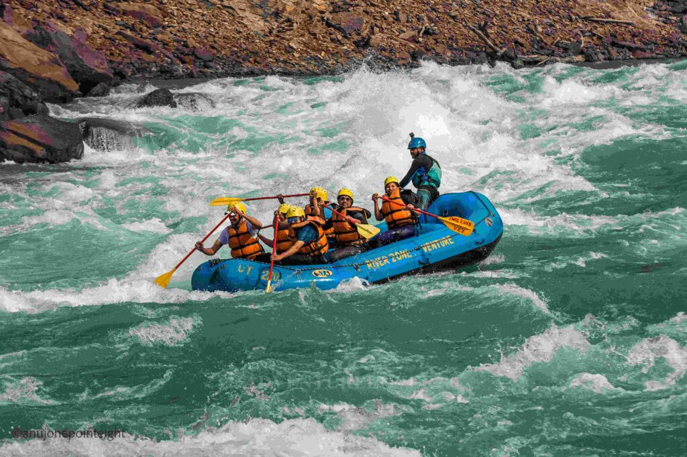

At Travel's Space, I believe that traveling is about creating new memories.
Uttrakhand - Devbhumi
Uttarakhand was popularly known as Uttaranchal. Renowned for its Hindu temple
sites and scenic beauty,
Uttarakhand is located in the northern part of our country.
The famous Jim Corbett National Park is also located here. The capital of Uttarakhand is
Dehradun,
and its official state animal is Alpine Musk Deer
Har Ki Pauri - Haridwar
Har Ki Pauri is a very special place in Haridwar, India. People believe bathing here washes away sins. Every evening, a beautiful ceremony called the Ganga Aarti, is held here. It is not only famous for spiritual destinations but also for river rafting and camping
River Rafting Adventure
| Package | Price | Duration |
|---|---|---|
| Rishikesh Shivpuri Rafting (16 km) | Half Day | |
| Rishikesh Marine Drive Rafting (24 km) | 1 Day | |
| Kaudiyala to Rishikesh Rafting (32 km) | 1 Day |
Email:varun.25004360@kiet.edu